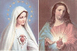

OBRIGADO POR SUA VISITA!


QUEREMOS PROPORCIONAR-LHE UMA AGRADÁVEL SURPRESA!

CLIQUE EM UM DOS ENDEREÇOS ABAIXO:
http://www.apostoladosagradoscoracoes.com/
http://www.angelfire.com/sc3/ministro/index.html
http://apostled.tripod.com/index.html
http://jusan.tripod.com/index.html
É a direção certa para os SAGRADOS CORAÇÕES de JESUS e MARIA!
Os endereços acima são de nosso PORTAL. Nele encontrará todos os Sites que construímos com muita dedicação, sobretudo fundamentados na Sagrada Escritura, na Tradição Cristã, nas Manifestações Sobrenaturais e na Vida e Obra dos Santos. Os assuntos são variados e atraentes: sobre o CRIADOR, a Vida e Obra de JESUS DE NAZARÉ, o DIVINO ESPÍRITO SANTO, diversos Sites sobre a Vida e Obra de vários Santos, as Aparições de NOSSA SENHORA, a Vida de NOSSA SENHORA, os ANJOS DO SENHOR, a VIA SACRA, o TERÇO DE NOSSA SENHORA e muito mais.


Os DOIS SAGRADOS CORAÇÕES, repletos de bondade, incessantemente pulsam por você, iluminam o seu caminho e inspiram o seu coração, removendo a nuvem de incerteza do amanhã, infundindo esperança, disposição e coragem para continuar na sua missão existencial, trilhando o rumo certo em direção ao CRIADOR.
Venha Visitar-nos!

OS SITES COLOCARÃO A PALAVRA DIVINA EM SUA MENTE E LHE PROPICIARÁ A VIVÊNCIA DE UM CRISTIANISMO HONESTO E FIEL.
Venha e Seja Bem Vindo!